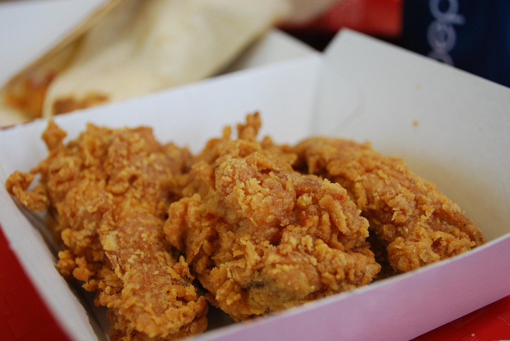

Excellent Oven Baked Wings

Here's how to make excellent oven-baked chicken wings in the KFC style.
Ingredients:
- 2 cup all-purpose flour
- 2 teaspoon salt
- 1-1/2 teaspoon dried thyme leaves
- 1-1/2 teaspoon dried basil leaves
- 1 teaspoon dried oregano leaves
- 1 tablespoon celery salt
- 1 tablespoon ground black pepper
- 1 tablespoon ground yellow mustard
- 1/4 cup paprika
- 2 tablespoon garlic salt
- 1 tablespoon ground ginger
- 3 tablespoon ground white pepper
- 1 cup buttermilk
- 1 egg, beaten
- Neutral oil for frying, like canola or peanut oil
- MSG seasoning
- 1kg chicken wings or pieces
Procedure:
- In a large bowl, combine the flour with the herbs and spices and set aside.
- Meanwhile, in another large bowl, whisk together the buttermilk and egg, mixing until they're well combined.
- Add the chicken to the buttermilk bowl and toss to coat. Cover the bowl lightly with plastic wrap or a lid and let it sit for 30 minutes, or as long as overnight. If marinade times exceed 30 minutes, place the bowl in the refrigerator.
- Meanwhile, preheat the oven to 150 degrees celsius. Line a tray with aluminum foil. Set an oven-safe wire rack on the tray.
- Remove a chicken piece from the buttermilk, allowing any excess liquid to drip off. Place the piece in the flour mixture and press down firmly, allowing the flour to adhere on all sides. Shake off any excess flour and place the chicken on the rack.
- Cook the chicken in the oven until the crust turns an appealing golden brown color, spraying or painting with oil every so often, turning the pieces as needed.
- Sprinkle each piece of chicken with a few shakes of MSG before serving. If you're unsure about food additives like MSG, feel free to skip the extra seasoning.
Back